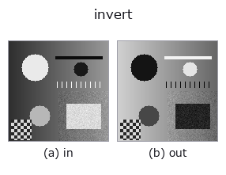

gray op• Datenarten: image → image
• Aufruf: fullseye.apply(img, "invert", a=0.5, b=0.5) (das 2-D-Modell ist ein Bild plus zwei skalare Regler a,b∈[0,1])
• HALCON-Äquivalent: invert_image (Bedeutung und Parameter sind in der HALCON-Referenz nachzulesen)

*Die Abbildung ist die tatsächliche Ausgabe auf einer synthetischen 128×128-Eingabe. Links Eingabe, rechts Ausgabe. Punktwolken als Draufsicht-Streudiagramm (Helligkeit = z), 1-D-Reihen als Linie, Volumen als Maximum-Projektion entlang z, Videos als mittleres Bild, komplexe Bilder als Betrag; Rückgabewerte, die kein Bild ergeben, werden als Werte gezeigt.*
*Regler a ändert die Ausgabe nicht (gemessen: identisch bei 0,1 / 0,5 / 0,9).*
*Regler b ändert die Ausgabe nicht (gemessen: identisch bei 0,1 / 0,5 / 0,9).*
Auf anderen Bildern (synthetische Szene / Foto / Münzen. Obere Reihe: Eingaben, untere Reihe: deren Ausgaben. Regler auf Standard):
▸ invert: other inputs (docs site)
*Die 4. Spalte ist eine Farb-Eingabe (H,W,3). Dieser Op verarbeitet Farbe, ohne Kanäle zu vermischen (er faltet den Farbkanal nicht als dritte Raumachse).*
Tonwertumkehr (Negativ-Positiv-Umkehrung). Entspricht HALCONs `invert_image` (Invert an image.).
> Die ausführliche Beschreibung unten ist der Originaltext — Zusammenfassung und Überschriften sind übersetzt.
`1 - clip(v,0,1) を返すだけ。a, b` は未使用。
• 入力を先に [0,1] へ clip してから反転するので、範囲外の値は飽和してから反転される(1.3 → 0、-0.2 → 1)。値域が [0,1] でない配列は前段で正規化しておくこと。
• 返り値は入力と同形の float、値域 [0,1]。NaN は clip を素通りして NaN のまま返る(`ops.py 直登録の op なので backend の guard は掛からない —— 非有限を止めたいなら fullseye.apply 経由で on_error="raise"`)。
• 2 回掛けると元に戻る(対合)。region に掛ければ前景/背景が入れ替わるが、region 用には `invert_region`(補集合)がある。
• 使いどころ: 暗い対象を `threshold で「明るい側」として拾う前の反転、dc_rpca_sparse の暗い残差や xpil_contour` の黒い線を正の信号にする、距離変換の「内側ほど暗い」を「内側ほど明るい」に読み替える。
• Leitfaden zur Familie gallery2d_gray_arith
• Katalog der Beispieldaten (Download-URLs / Lizenzen) — 2-D nutzt skimage.data (BSD/Public Domain) plus synthetische Bilder, 3-D nennt Download-URLs echter Datenquellen (Stanford, PDS, …).
• Herkunft und Literatur der Operatoren — die Quellen der Forschung/Verfahren, auf denen diese Operatorfamilie beruht.
• Der kanonische Algorithmus (Autor, Jahr) und seine Anwendungen stehen im Familienleitfaden oben.
Das Programm unten ist nachweislich lauffähig (gleiche Eingabe wie die Abbildung). In der Studio-Hilfe wird dieser Block zu Schaltflächen, die es sofort laden und ausführen.
invert 0.50 0.50
▸ Load this pipeline · Load & run
• gallery2d_gray_arith — py -3.11 examples/gallery2d_gray_arith.py
image als Eingabe)identity · gaussian · mean_box · bilateral · unsharp · median · min_filter · max_filter
gray)gamma · scale_clip · equalize · sigmoid · clahe · sk_adapthist · sk_enhance_contrast · sk_autolevel
*Provenance: ops.py — 2D Operator-Registry. Diese Notiz wird von tools/opdocs.py md erzeugt (nicht von Hand bearbeiten).*
© 2026 Kazufumi Furuse — Fullseye operator documentation. Licensed under Apache-2.0.
{kind=link}